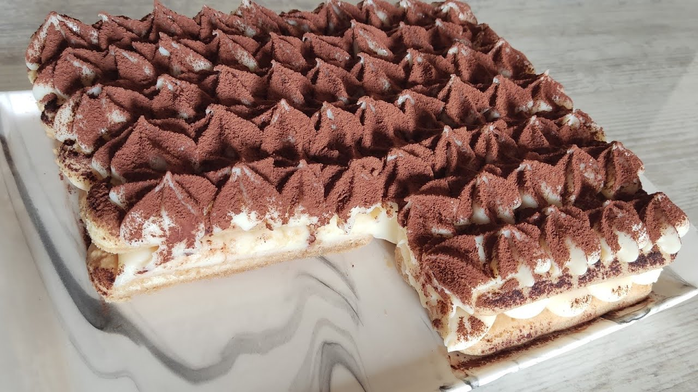
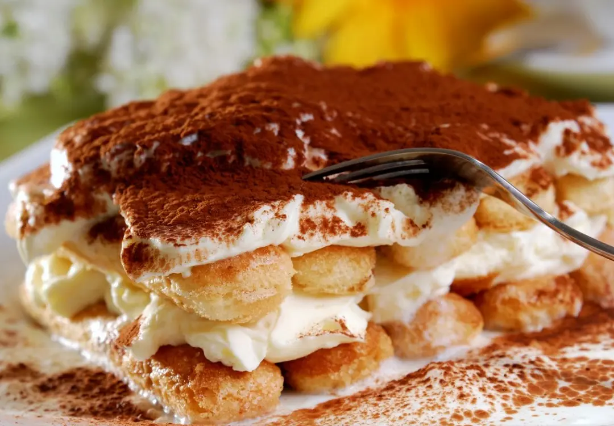

Kedidilli Tiramisu

Lezzetli

Kahve Eşlikçisi
Dilaranın Tatlı Dünyası – Tatlı severler için lezzet dolu bir yolculuk! 🧁🍫 Bu sitede, birbirinden nefis tatlı tariflerini adım adım bulabilir, kolayca uygulayabilirsiniz. Ev yapımı pastalar, şerbetli tatlılar, sağlıklı atıştırmalıklar ve daha fazlası ile tatlı krizlerinize son! Dilaranın özel tarifleriyle mutfağınızda harikalar yaratmaya hazır olun.
Kimim?

Merhaba! Ben Dilara. Dilaranın Tatlı Dünyası’nı yaratmaya karar verdim çünkü tatlılar, hayatımın en keyifli anlarını oluşturuyor.
Küçüklüğümden beri mutfakta zaman geçirmek, yeni tarifler denemek ve tatlılarla yaratıcı deneyler yapmak beni hep cezbetti. Bu blogda, tatlı dünyasının derinliklerine dalarak, sevdiklerinizle paylaşabileceğiniz enfes tarifler ve tatlı yapma sırları paylaşıyorum.
1 - Yumurta, süt, şeker, nişasta ve unu bir tencereye aktarıp güzelce karıştırın ve ocağın üzerine alıp pişirin. Pişirirken karıştırın ve muhallebi kıvamı almasını sağlayın.
2 - Kıvam alan muhallebinin içerisine kremayı ilave edip güzelce çırpın.
3 - Ardından labneyi de ilave ederek güzelce çırpın.
4 - Ardından kremayı dinlenmeye alın.
5 - Bisküvileri ıslatacağınız karışım için kahve, şeker ve suyu bir kapta karıştırın. Üzerine kremanın yarısını ilave edin.
6 - Küçük boy kare borcamın içerisine kedidili bisküvileri kahveyle ıslatarak dizin
7 - Üzerine kremanın yarısını ilave edin.
8 - Bir kat daha kahveyle ıslatılmış kedidili dizin.
9 - Üzerine son kalan kremayı ilave edin.
10 - Spatula ile üzerini düzeltin
11 - Ardından kakaoyu serpin.
12 - Dilediğiniz sayıda dilimleyin. Biz 6 dilim olmasını tercih ettik.
13.Bu kedidilli tiramisu tarifi favoriniz olacak. Afiyet olsun!
"Tarifi denedim ve gerçekten harika oldu! Kreması tam kıvamında ve çok lezzetliydi. Ailecek bayıldık, teşekkürler!"
Neler düşünüyorsun? Önerilerini yazmayı unutma!
Isparta, TR
Telefon: +90 5225 245 654 58
Email: dilaranintatlilari@gmail.com